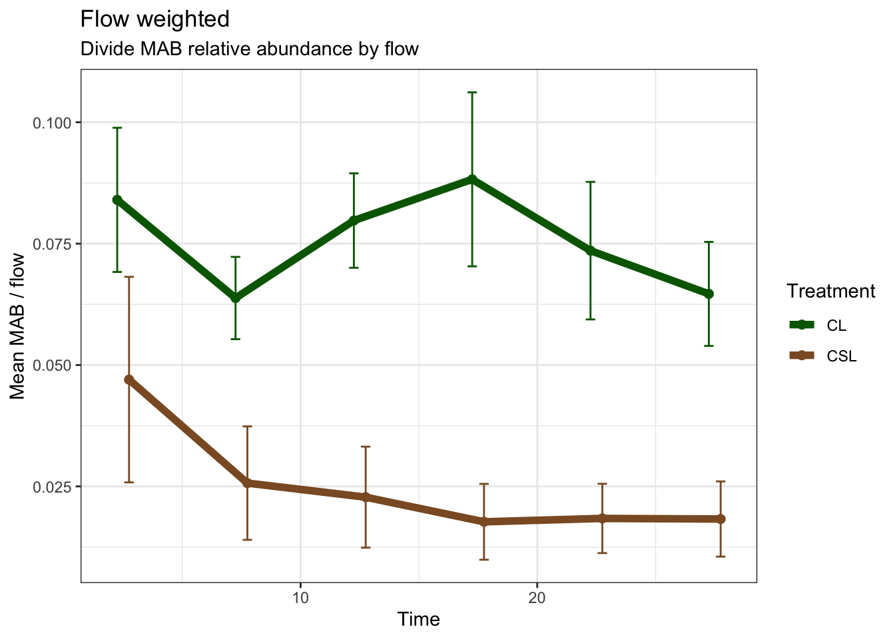

library(readxl)
library(tidyverse)
library(ggpubr)
library(rstatix)
Attaching package: 'rstatix'The following object is masked from 'package:stats':
filter2/15/2021
This plot shows the flow rate for each sample from each plot.
If we plot MAB vs. flow, do prairie strips have an impact?
library(readxl)
library(tidyverse)
library(ggpubr)
library(rstatix)
Attaching package: 'rstatix'The following object is masked from 'package:stats':
filtermabbarplot <- readRDS(file = "Data/mabbarplot.RDS")
flow <- read_excel("Data/WOR_Water_flow.xlsx")
flow$sample_number <- as.character(flow$sample_number)ggplot(flow, aes(x = as.factor(sample_number), y = `flow_g/s`, group = as.factor(plot))) +
geom_line(position = position_dodge(width = .3)) +
geom_point(aes(color = as.factor(treatment)), position = position_dodge(width = .3), size = 5) +
geom_text(aes(label = plot), position = position_dodge(width = .3), show.legend = F) +
theme_classic() +
theme(
legend.position = "top",
panel.background = element_rect(color = 'black', size = 1.4),
strip.text.x = element_text(size = 10, face = 'bold'),
strip.background = element_rect(colour = 'black', size = 1.4),
axis.text.x = element_text(angle = 0, vjust = 0, hjust = 0.5)) +
scale_color_viridis_d() +
labs(x = "Time after runoff start (min)", y = "Flow (mL/s)", color = "Treatment \n(points labeled with plot)") +
scale_x_discrete(labels = c("1" = "2.5", "2" = "7.5", "3" = "12.5", "4" = "17.5", "5" = "22.5", "6" = "27.5"))
ggsave(filename = "Figures/SupFig4.png", plot = last_plot(), device = "png", width = 6.5, height = 7.5, units = "in", dpi = 350)norm <- readRDS(file = "Data/norm.RDS") # Load norm data from ARGs.qmd
SixS <- norm %>%
filter(Assay == "16S_Eub_338_518")
SixS# A tibble: 198 x 8
plot sample_number rep treatment Assay gene_class counts Value
<chr> <chr> <int> <chr> <chr> <chr> <dbl> <chr>
1 2 5 1 WCS 16S_Eub_33… 16S 844. 18.3926544…
2 2 5 2 WCS 16S_Eub_33… 16S 858. 18.3668106…
3 2 5 3 WCS 16S_Eub_33… 16S 1308. 17.7039409…
4 2 3 1 WCS 16S_Eub_33… 16S 715. 18.6550587…
5 2 3 2 WCS 16S_Eub_33… 16S 733. 18.6149361…
6 2 3 3 WCS 16S_Eub_33… 16S 1173. 17.8757951…
7 2 1 1 WCS 16S_Eub_33… 16S 3359. 16.2208645…
8 2 1 2 WCS 16S_Eub_33… 16S 3564. 16.1278807…
9 2 1 3 WCS 16S_Eub_33… 16S 4399. 15.7965356…
10 1 5 1 WCS 16S_Eub_33… 16S NA <NA>
# … with 188 more rowsSixS$treatment = factor(SixS$treatment,
levels = c('WCS', 'WCSM', 'WCM'))
levels(SixS$treatment) <- list("CS"="WCS", "CSM"="WCSM", "CM"="WCM")
SixS$sample_number <- as.factor(SixS$sample_number)
levels(SixS$sample_number) <- list("2.5" = "1", "7.5" = "2", "12.5" = "3", "17.5" = "4", "22.5" = "5", "27.5" = "6")
my_comparisons <- list( c("WCS", "WCSM"), c("WCS", "WCM"), c("WCM", "WCSM"))
sig <- SixS %>%
filter(!rep %in% c(4,5,6)) %>%
droplevels()
sig# A tibble: 162 x 8
plot sample_number rep treatment Assay gene_class counts Value
<chr> <fct> <int> <fct> <chr> <chr> <dbl> <chr>
1 2 22.5 1 CS 16S_Eub_33… 16S 844. 18.3926544…
2 2 22.5 2 CS 16S_Eub_33… 16S 858. 18.3668106…
3 2 22.5 3 CS 16S_Eub_33… 16S 1308. 17.7039409…
4 2 12.5 1 CS 16S_Eub_33… 16S 715. 18.6550587…
5 2 12.5 2 CS 16S_Eub_33… 16S 733. 18.6149361…
6 2 12.5 3 CS 16S_Eub_33… 16S 1173. 17.8757951…
7 2 2.5 1 CS 16S_Eub_33… 16S 3359. 16.2208645…
8 2 2.5 2 CS 16S_Eub_33… 16S 3564. 16.1278807…
9 2 2.5 3 CS 16S_Eub_33… 16S 4399. 15.7965356…
10 1 22.5 1 CS 16S_Eub_33… 16S NA <NA>
# … with 152 more rowsp <- ggplot(sig, aes(x=treatment, y=counts, fill = treatment)) +
geom_boxplot() +
labs(x = "Treatment", y = "Log 10 gene 16s copies") +
scale_y_continuous(trans = 'log10') +
scale_fill_viridis_d() +
facet_wrap( ~ sample_number) +
theme_pubr() +
theme(
legend.background = element_rect(
fill = (alpha = 0),
color = 'black',
size = 0.1),
panel.background = element_rect(color = 'black', size = 1.4),
strip.text.x = element_text(size = 10, face = 'bold'),
strip.background = element_rect(colour = 'black', size = 1.4),
legend.position = "none")
p Warning: Removed 6 rows containing non-finite values (stat_boxplot).
krusk.test <- sig %>%
group_by(sample_number) %>%
kruskal_test(counts ~ treatment)
krusk.test# A tibble: 6 x 7
sample_number .y. n statistic df p method
* <fct> <chr> <int> <dbl> <int> <dbl> <chr>
1 2.5 counts 27 9.00 2 0.0111 Kruskal-Wallis
2 7.5 counts 27 9.43 2 0.00895 Kruskal-Wallis
3 12.5 counts 27 17.0 2 0.000206 Kruskal-Wallis
4 17.5 counts 27 5.66 2 0.0591 Kruskal-Wallis
5 22.5 counts 27 3.41 2 0.182 Kruskal-Wallis
6 27.5 counts 27 4.02 2 0.134 Kruskal-Wallisstat.test <- sig %>%
group_by(sample_number) %>%
dunn_test(counts ~ treatment) %>%
adjust_pvalue(method = "hochberg") %>%
mutate(y.position = rep(c(log10(100000), log10(300000), log10(1000000)), 6))
stat.test# A tibble: 18 x 11
sample_number .y. group1 group2 n1 n2 statistic p p.adj
* <fct> <chr> <chr> <chr> <int> <int> <dbl> <dbl> <dbl>
1 2.5 counts CS CSM 9 9 1.46 0.146 0.878
2 2.5 counts CS CM 9 9 3.00 0.00271 0.0433
3 2.5 counts CSM CM 9 9 1.54 0.123 0.878
4 7.5 counts CS CSM 8 9 2.52 0.0117 0.163
5 7.5 counts CS CM 8 9 2.82 0.00478 0.0717
6 7.5 counts CSM CM 9 9 0.308 0.758 0.878
7 12.5 counts CS CSM 9 9 3.18 0.00149 0.0253
8 12.5 counts CS CM 9 9 3.86 0.000113 0.00204
9 12.5 counts CSM CM 9 9 0.683 0.495 0.878
10 17.5 counts CS CSM 8 9 1.82 0.0693 0.693
11 17.5 counts CS CM 8 9 2.26 0.0235 0.306
12 17.5 counts CSM CM 9 9 0.462 0.644 0.878
13 22.5 counts CS CSM 6 9 1.27 0.205 0.878
14 22.5 counts CS CM 6 9 1.83 0.0667 0.693
15 22.5 counts CSM CM 9 9 0.633 0.527 0.878
16 27.5 counts CS CSM 8 9 1.67 0.0941 0.847
17 27.5 counts CS CM 8 9 1.82 0.0682 0.693
18 27.5 counts CSM CM 9 9 0.154 0.878 0.878
# … with 2 more variables: p.adj.signif <chr>, y.position <dbl>p <- ggboxplot(sig, x = "treatment", y = "counts", facet.by = "sample_number") +
scale_y_continuous(trans = "log10")
options(scipen = 5)
p +
stat_pvalue_manual(stat.test, hide.ns = T) +
theme_pubr() +
labs(x = "Treatment", y = "Log 10 gene 16s copies",
caption = get_pwc_label(stat.test)) +
scale_x_discrete(labels = c("CSM" = "CSL", "CM" = "CL"))Warning: Removed 6 rows containing non-finite values (stat_boxplot).
ggsave(filename = "Figures/SuppFiggS5.png", plot = last_plot(), device = "png", units = "in", width = 6.5, height = 7.5, dpi = 300)Warning: Removed 6 rows containing non-finite values (stat_boxplot).df <- mabbarplot$data %>%
group_by(plot, time) %>%
mutate(SumAbund = sum(Abundance)) %>%
rename(sample_number = time) %>%
ungroup() %>%
left_join(flow, by = c("plot", "sample_number")) %>%
select(treatment.x, plot, sample_number, SumAbund, time_after_runoff_start, collection_time_sec, jare_tare_wt_g, jare_plus_runoff_wt_g, `flow_g/s`)
write_excel_csv(df, file = "Data/water_flow_with_MAB.csv")
lmplot <- df %>%
filter(!treatment.x == "CS") %>%
ggplot(aes(x = `flow_g/s`, y = SumAbund, color = treatment.x)) +
geom_point() +
geom_smooth(method = lm, se = FALSE) +
scale_color_manual(values = c("darkgreen", "tan4"), name = "Treatment") +
theme_bw()
lmplot`geom_smooth()` using formula 'y ~ x'# Two seperate lm's to calculated where they intersect
CM <- df %>%
filter(!treatment.x %in% c("CS", "CSL")) %>%
lm(SumAbund ~ `flow_g/s`, data = .)
summary(CM)$r.squared[1] 0.5325833summary(CM)$adj.r.squared[1] 0.5305686CSM <- df %>%
filter(!treatment.x %in% c("CS", "CL")) %>%
lm(SumAbund ~ `flow_g/s`, data = .)
summary(CSM)$r.squared[1] 0.5541166summary(CSM)$adj.r.squared[1] 0.5521947# where do the two lines intersect?
cm <- rbind(coef(CM),coef(CSM)) # Coefficient matrix
c(-solve(cbind(cm[,2],-1)) %*% cm[,1])[1] 7.373952 0.286310lmplot <- df %>%
filter(!treatment.x == "CS") %>%
ggplot(aes(x = `flow_g/s`, y = SumAbund, color = treatment.x)) +
geom_point() +
geom_smooth(method = lm, se = FALSE) +
geom_point(x = 7.373952, y = 0.286310, color = "black") +
annotate("text", x = 8.1, y = 0.24, label = "7.37 (mL/s)") +
stat_cor(aes(label = paste(..rr.label.., ..p.label.., sep = "~`,`~")),
label.x = 3, show.legend = F) +
labs(x = "Flow (mL/s)", y = "Relative abundance (%)") +
scale_y_continuous(labels = function(x) paste0(x*100, "%")) +
annotate("segment", x = 7.373952, xend = 7.6, y = 0.286310, yend = 0.26,
colour = "black") +
scale_color_manual(name = "Treatment", labels = c("CSL", "CL"), values = c("darkgreen", "tan4")) +
theme_bw()
lmplot`geom_smooth()` using formula 'y ~ x'
ggsave(filename = "Figures/SupFig6.png", plot = last_plot(), device = "png", width = 6.5, height = 7.5, units = "in", dpi = 350)`geom_smooth()` using formula 'y ~ x'If we plot MAB vs. flow, do prairie strips have an impact?
Look at differences in sample volume, time to collect ::: {.cell hash=“WaterFlow_cache/html/unnamed-chunk-18_ea17828036dab054f63262c87972c004”}
colnames(df)[1] "treatment.x" "plot"
[3] "sample_number" "SumAbund"
[5] "time_after_runoff_start" "collection_time_sec"
[7] "jare_tare_wt_g" "jare_plus_runoff_wt_g"
[9] "flow_g/s" ggplot(df, aes(x = as.factor(sample_number), y = collection_time_sec, fill = as.factor(plot))) +
geom_bar(stat = "identity", position = "dodge") +
facet_grid(~ treatment.x) +
ggtitle("Sample Collection time")
ggplot(df, aes(x = as.factor(sample_number), y = jare_plus_runoff_wt_g - jare_tare_wt_g, fill = as.factor(plot))) +
geom_bar(stat = "identity", position = "dodge") +
facet_grid(~ treatment.x) +
ggtitle("Sample Volume"):::
A simple scatter plot looking at flow vs abundance, with a lm line fitted to each treatment.
[1] "numeric"`geom_smooth()` using formula 'y ~ x'
It appears that up to a flow of 7.5 g/s, strips may be effective at removing MAB in runoff water when compared to if no strips are present.
Calculate corrected (cor) MAB abundance by dividing MAB abundance by flow in each sample. Then calculate the treatment mean, sd, se and interquartile.

Here, despite the error bars, we have indications that when strips are present, there is less MAB in runoff water.
Event mean concentration (EMC)
EMC calculation
For a plot we have
6 water samples
Mass (vol) of water collected at each sample
Time to collect each sample
Count of ARGs filtered out of sample
The calculation
Event load (EL)
\[ =\frac{{T1ARGConc}*{T1Vol}+{T2ARGConc}*{T2Vol}+{T3ARGConc}*{T3Vol}+{T4ARGConc}*{T4Vol}+{T5ARGConc}*{T5Vol}+{T6ARGConc}*{T6Vol}}{Event TotalVol} \]
# Load copy number from HT-qPCR runs
# If you haven't calculated copy numbers yet,
# see: \#\#\#\#\#\#\#
water_counts <- read_csv("Data/WORWATERARGCOUNTS.csv")
── Column specification ────────────────────────────────────────────────────────
cols(
.default = col_character(),
rConc = col_double(),
Value = col_double(),
`Calibrated rConc` = col_double(),
Quality = col_double(),
Threshold = col_double(),
`In Range` = col_double(),
`Out Range` = col_double(),
`Peak Ratio` = col_double(),
counts = col_double()
)
ℹ Use `spec()` for the full column specifications. head(water_counts)# A tibble: 6 x 22
Sample_Name Sample_Type Assay Assay_Type ID rConc Value `Calibrated rCon…
<chr> <chr> <chr> <chr> <chr> <dbl> <dbl> <dbl>
1 P2_5 Unknown tetbP Test S06-A28 1 999 -1
2 P2_5 Unknown tetbP Test S06-A29 1 999 -1
3 P2_5 Unknown tetbP Test S06-A30 1 999 -1
4 P2_3 Unknown tetbP Test S05-A28 1 999 -1
5 P2_3 Unknown tetbP Test S05-A29 1 999 -1
6 P2_3 Unknown tetbP Test S05-A30 1 999 -1
# … with 14 more variables: Quality <dbl>, Call <chr>, Threshold <dbl>,
# In Range <dbl>, Out Range <dbl>, Peak Ratio <dbl>, soil_type <chr>,
# plot <chr>, treatment <chr>, block <chr>, sample_day <chr>,
# sample_number <chr>, sample_type <chr>, counts <dbl>